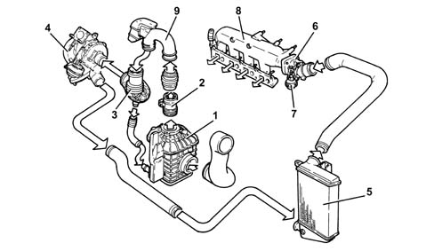
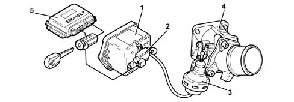
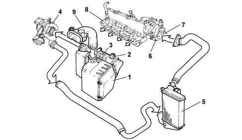
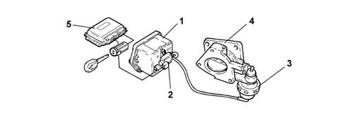

Introduction - ENGINE AIR SUPPLY CIRCUIT
- Path
- Descriptions > 10 ENGINE > 1048 ENGINE AIR SUPPLY CIRCUIT > Introduction - ENGINE AIR SUPPLY CIRCUIT
- Kind
- system description
- Applies to
- engines: 1.6 TS, 2.0 TS, 1.9 JTD 8V, 1.9 JTD 16V; all production periods
- Interactive page
- https://sloeber94.github.io/elrnDB-a147/en/#/3026086
Applies to: engines: 1.6 TS; all production periods; only with equipment: 103 CV
CONSTRUCTION FEATURES
The air intake circuit consists of various components which ensure that the air flow required by the engine in all operating conditions is correctly directed to the cylinders.
Applies to: engines: 1.6 TS; all production periods; only with equipment: 120 CV
CONSTRUCTION FEATURES
The air intake circuit consists of various components which ensure that the air flow required by the engine in all operating conditions is correctly directed to the cylinders.
Applies to: engines: 2.0 TS; all production periods
CONSTRUCTION FEATURES
The air intake circuit consists of various components which ensure that the air flow required by the engine in all operating conditions is correctly directed to the cylinders.
Applies to: engines: 1.9 JTD 8V; all production periods
COMPOSITION
STRUCTURE
AIR SUPPLY SYSTEM

1 - Air cleaner with resonator 2 - Flow meter 3 - Corrugated hose 4 - Turbocharger 5 - Air-Air heat exchanger (intercooler) 6 - Throttle body 7 - Throttle body actuator 8 - Air chamber 9 - Hose with resonator
COMPONENT DESCRIPTIONS
THROTTLE BODY
Construction features
To reduce engine judder when it is being switched off, a throttle body has been fitted upstream of the air chamber to cut off air flow to the cylinders.
Under all other operating conditions, the throttle body remains open.

1 - Vacuum reservoir 2 - Solenoid 3 - Throttle body actuator 4 - Throttle body 5 - Fuel injection control unit
Operation
With the engine switched off, the throttle is open because there is no vacuum.
With the engine running, the throttle is open because, as the Pierburg solenoid valve is not supplied, it prevents the vacuum from reaching the pneumatic actuator.
The vacuum accumulates in the reservoir whilst the engine is running.
Whilst the engine is being switched off (when the key is turned to the OFF position), the control unit keeps the actuator relay feed supplied for 4 or 5 seconds and, at the same time, places the Pierburg solenoid valve to earth which, on opening, sends the vacuum, which has accumulated in the vacuum reservoir, to the pneumatic actuator which closes the butterfly interrupting the flow of air to the cylinders.
Applies to: engines: 1.9 JTD 16V; all production periods
COMPOSITION
STRUCTURE
AIR SUPPLY SYSTEM

1 - Air filter complete with resonator 2 - Flow meter 3 - Corrugated hose 4 - Turbocharger 5 - Air-Air heat exchanger (intercooler) 6 - Throttle body 7 - Throttle body actuator 8 - Air chamber 9 - Hose with resonator
COMPONENT DESCRIPTION
BUTTERFLY CASING
Construction features
To reduce engine judder when it is being switched off, a throttle body has been fitted upstream of the air chamber to cut off air flow to the cylinders.
Under all other operating conditions, the throttle body remains open.

1 - Vacuum reservoir 2 - Solenoid 3 - Throttle body actuator 4 - Throttle body 5 - Fuel injection control unit
Operating
With the engine switched off, the throttle is open because there is no vacuum.
With the engine running, the throttle is open because, as the Pierburg solenoid valve is not supplied, it prevents the vacuum from reaching the pneumatic actuator.
The vacuum accumulates in the reservoir whilst the engine is running.
Whilst the engine is being switched off (when the key is turned to the OFF position), the control unit keeps the actuator relay feed supplied for 4 or 5 seconds and, at the same time, places the Pierburg solenoid valve to earth which, on opening, sends the vacuum, which has accumulated in the vacuum reservoir, to the pneumatic actuator which closes the butterfly interrupting the flow of air to the cylinders.